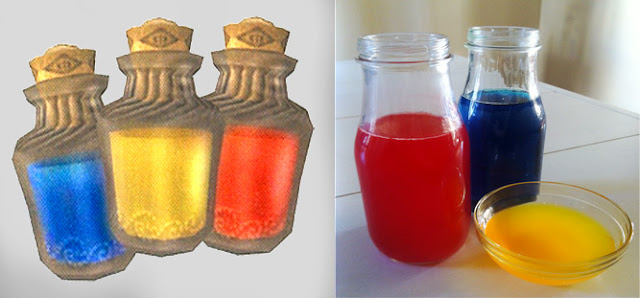

Chu Jelly

Description
Chu Jelly is an edible bottle item in some of the newer Zelda titles. The jelly is obtained by defeating Chus or ChuChus, a sort of blob-like enemy which usually hangs out in dark damp areas like caves and dungeons. Different color Chu Jellies do different things, but typically restore Link's magic or health.
Ingredients
- fruit juice
- water
- food dyes
- gelatin
- honey
Steps
- Bring your juice and tonic water to a boil. If you are adding sweetener to the mix to mask the tonic taste, add it as it boils.
- After the liquid has reached a boil, SLOWLY stir in the gelatin with a wooden spoon, careful not to add too much at once or it may clump.
- Pour the liquid into the pitcher. Add the liquid from the pitcher to your bottles.
- Add a few drops of the food coloring you want for that particular bottle into the liquid, and stir until the color is consistent throughout the bottle.
- Once the bottles look right, refrigerate them for about two hours or until the jelly has become a more jelly-like texture.